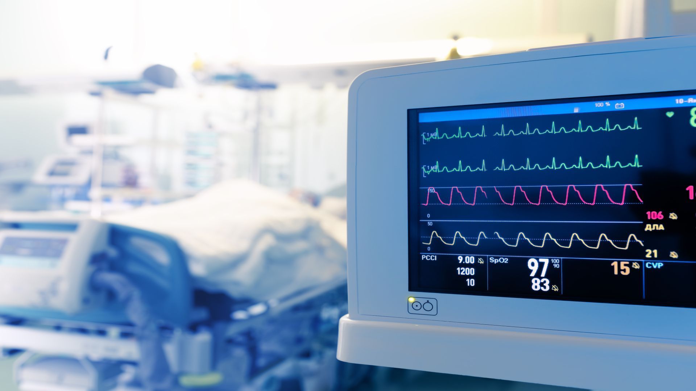
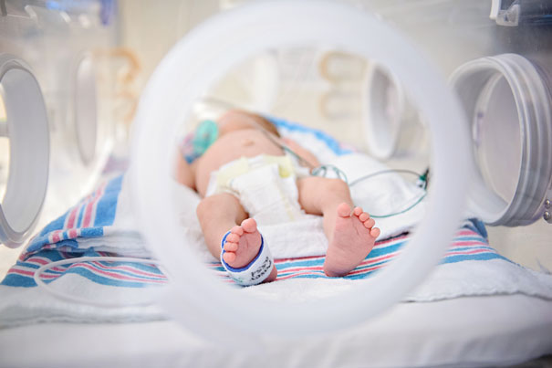

| Home | Contact US |

ICUICU-An intensive care unit (ICU), also known as an intensive therapy unit or intensive treatment unit (ITU) or critical care unit (CCU), is a special department of a hospital or health care facility that provides intensive care medicine.. |

NICUNICU stands for newborn intensive care unit. This is a nursery in a hospital that provides around-the-clock care to sick or premature babies. It has health care providers who have special training and equipment to give your baby the best possible care. |
PICUThe PICU also allows medical staff to provide therapies that might not be available in other parts of the hospital. Some of these more intensive therapies include ventilators (breathing machines) and certain medicines that can be given only under close medical supervision.. |
EMERGENCYAn emergency department (ED), also known as an accident & emergency department (A&E), emergency room (ER), emergency ward (EW) or casualty department, is a medical treatment facility specializing in emergency medicine, the acute care of patients who present without prior appointment; either by their own means or by that of an ambulance. |
NEURO SURGERYNeurosurgery is surgery of the nervous system. Most people think of neurosurgery as brain surgery — but it is much more! It is the medical specialty concerned with the diagnosis and treatment of patients with injury to, or diseases/disorders of the brain, spinal cord and spinal column, and peripheral nerves within all parts of the body. The specialty of neurosurgical care includes both adult and pediatric patients. |
PHYSICIANA physician is a medical doctor who usually focuses on the non-surgical treatment of patients’ conditions. That is not to say that being a physician is not practical; most specialisms have a unique range of procedures that relate to their specialty. which means they are able to diagnose and treat general illnesses, but will need to refer patients to Specialist Physicians whenever the disease/disorder needs further medical attention. |